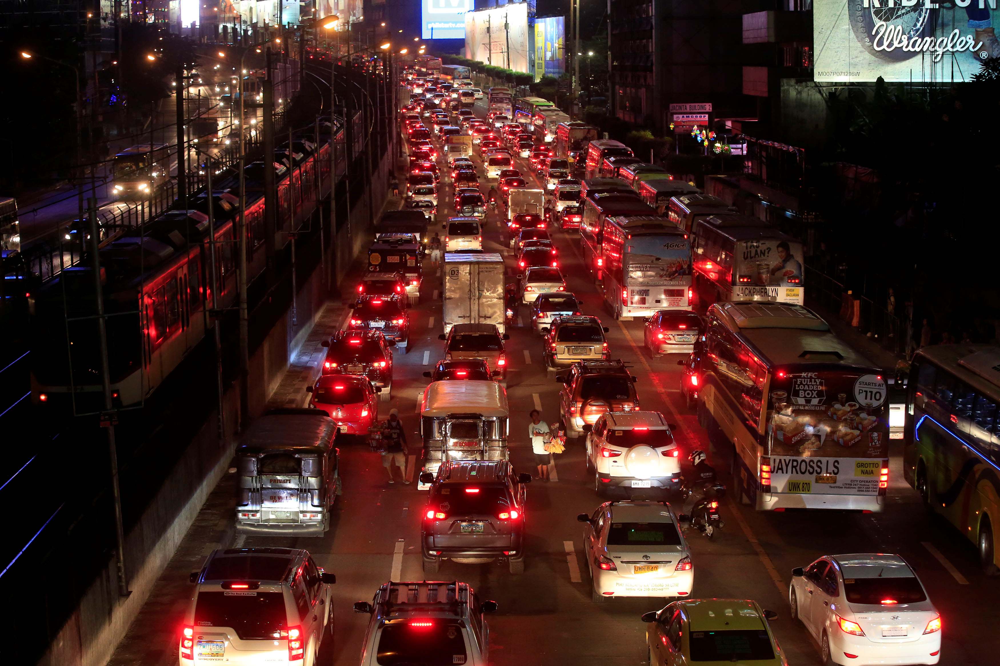
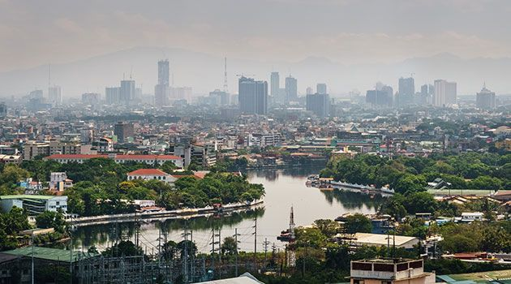
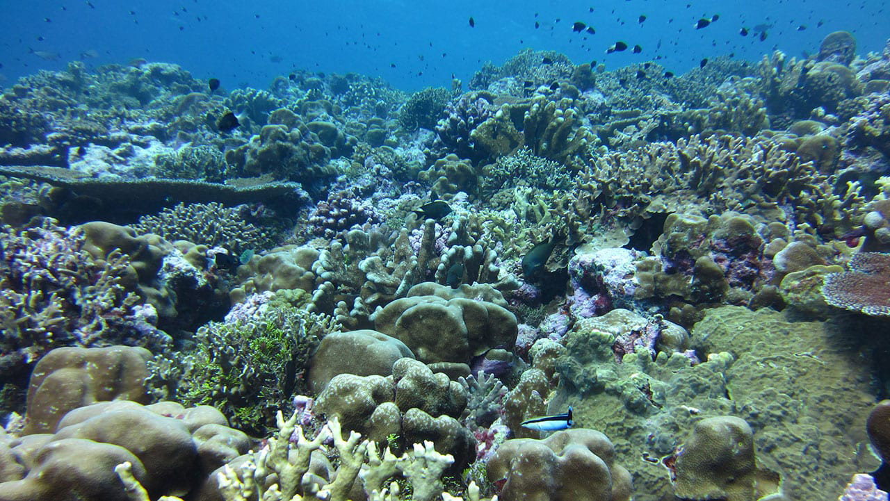
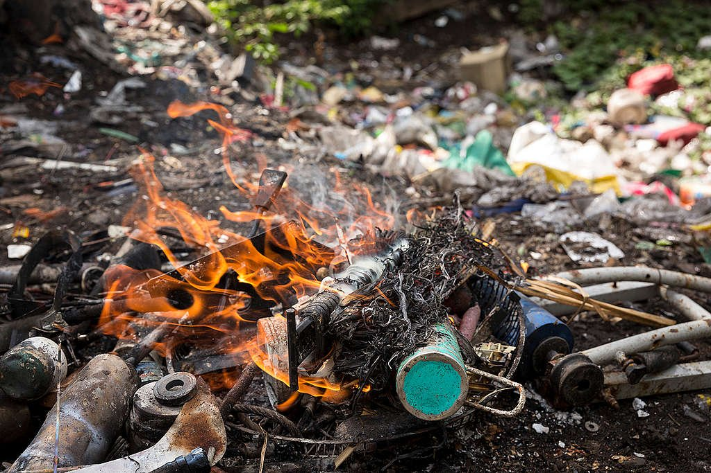
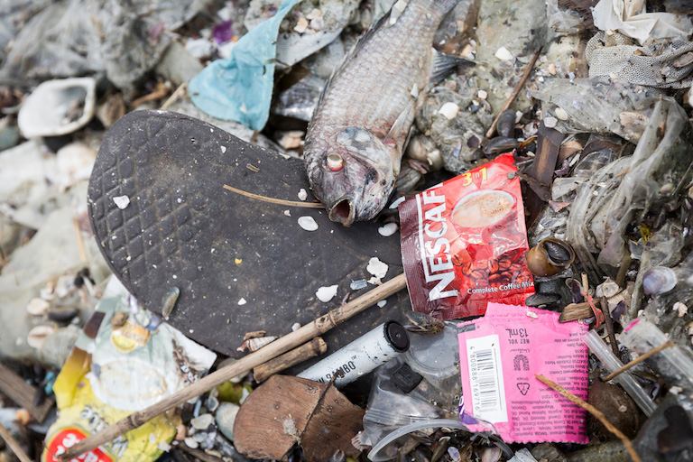
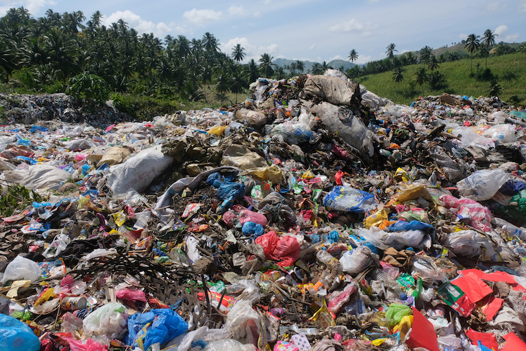
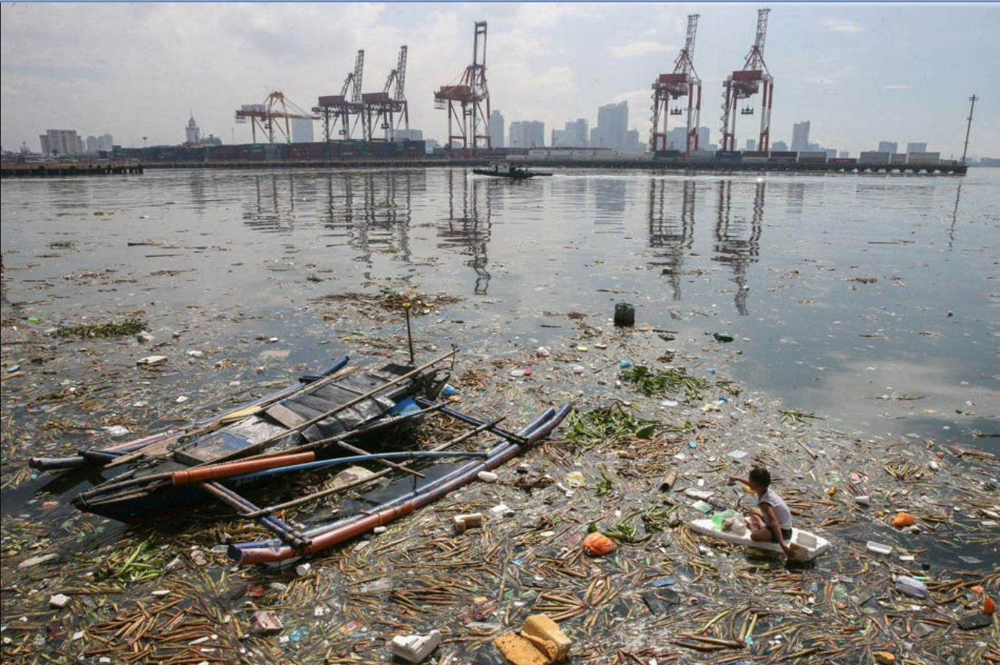
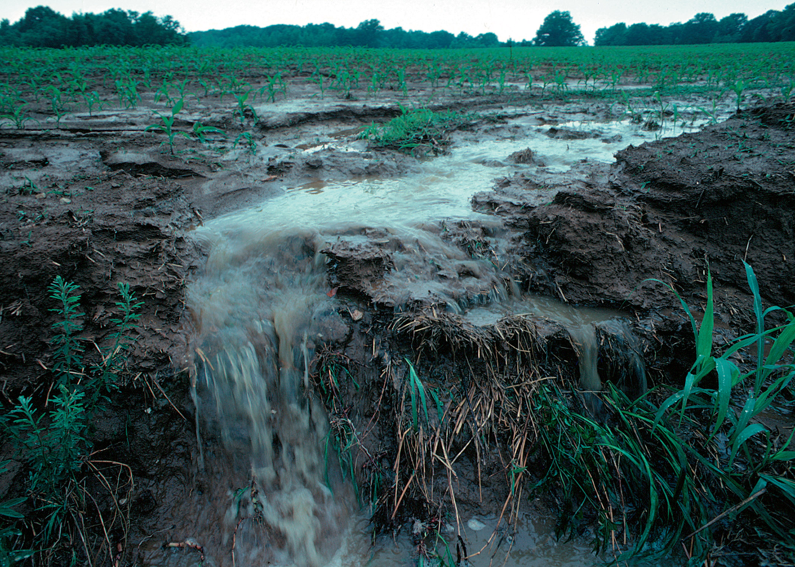
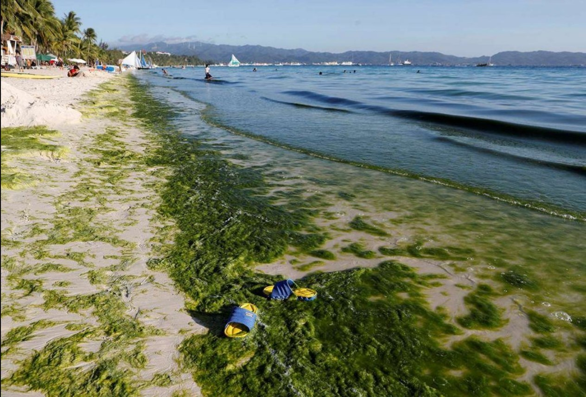

What is Pollution?
Pollution is the rapid addition of harmful materials or substances (also known as pollutants) into the environment that it cannot be dispersed, diluted, decomposed, recycled, or stored in some harmless form. Not only, is it regarded as an environmental issue, but it is also as a social issue because it is mostly caused by human activity and also negatively affects people and society. The main types of pollution are air pollution, water pollution, and land pollution.
Environmental Performance Index Results
The Environmental Performance Index is a joint project of the Yale Center for Environmental Law & Policy and The Center for International Earth Science Information Network (CIESIN) that provides a data-driven summary of the state of sustainability around the world. According to the organization, the Philippines' Environmental Performance Index (EPI) is ranked 82 out of 180 countries and has an EPI score of 57.65, with 100 being the best score. A more detailed report can be found here.
Causes and Effects of Pollution in the Philippines

There are various causes of pollution, however, the most major factors are the most common activities we do. One source of pollution is automobiles and factories. Our common modes of transportation like jeepneys, cars, trucks, and motorcycles all need to burn fossil fuels (coal, oil, gas). Power plants also burn fossil fuels to create heat which is in turn used to generate steam to drive turbines that generate electricity. However, burning fossil fuels produces a colorless and odorless gas called carbon monoxide, which is harmful in high concentrations. Aside from carbon monoxide, other common pollutants are produced like nitrogen oxide, sulfur dioxide, and hydrocarbons. This rampant and continuous burning of fossil fuels is concerning since pollutants are a health risk to people because it burns people's eyes, makes breathing difficult, and increase the risk of lung cancer. Not to mention, it also harms and kills many plants and animals.

These chemicals also react with sunlight to produce smog, which is a thick fog or haze of air pollution. The burning of fossil fuels has also increased the number of greenhouse gases in the atmosphere resulting in global temperatures rising, which is called global warming. Global warming is particularly worrying because it is causing ice sheets and glaciers to melt. The melting ice is causing sea levels to rise at a rate of 2 millimeters (0.09 inches) per year, which means rising seas will eventually flood low-lying coastal regions like various islands in the Philippines. Scientists have also predicted that global warming will cause an increase in severe storms. It will also cause more droughts in some regions and more flooding in others.

Additionally, global warming contributes to the phenomenon of ocean acidification, the process of ocean waters absorbing more carbon dioxide from the atmosphere. Fewer organisms can survive in warmer, less salty waters. The ocean food web is threatened as plants and animals such as coral fail to adapt to more acidic oceans.

Another cause of pollution is burning trash and crops. Although incinerating trash gets rid of it, it can also release dangerous heavy metals and chemicals into the air. Burning can also create residues that contaminate the soil and groundwater and can enter the human food chain through crops and livestock. Though the ashes may increase soil fertility, they may remain fertile for only a short span of time.

A major factor in the Philippines' garbage problem is the "sachet economy". Shampoo, bath soap, toothpaste, cooking oil, soy sauce, vinegar, and many other low-cost consumer products come in small, single-use plastic packages that are affordable for the country's bulk of poor and middle-income families. In 2017, a consortium of environmental groups, including Greenpeace, conducted a weeklong waste audit at Freedom Island. It showed that single-serve plastic packaging made up the bulk of waste collected in the area and that products manufactured by Switzerland-based Nestle and Netherlands-based Unilever were the most represented.

Additionally, inefficient garbage collection systems contribute to land pollution. Sometimes, landfills are not completely sealed off from the land around them. Pollutants from the landfill leak into the earth in which they are buried. Plants that grow on the earth may be contaminated, and the herbivores that eat the plants also become contaminated. So do the predators that consume the herbivores. This process, where a chemical builds up in each level of the food web, is called bioaccumulation. Pollutants leaked from landfills also leak into local groundwater supplies. There, the aquatic food web (from microscopic algae to fish to predators such as sharks or eagles) can suffer from bioaccumulation of toxic chemicals.

Sewage that has not been properly treated is a common source of water pollution. Many cities around the world have poor sewage systems and sewage treatment plants. Some polluted water looks muddy, smells bad, and has garbage floating in it. Some polluted water looks clean but is filled with harmful chemicals you can't see or smell. Chemical pollutants in the trash can also pollute the water, making it toxic for fish and people who use the river as a source of drinking water. The fish that are caught in a polluted river often have high levels of chemical toxins in their flesh. People absorb these toxins as they eat the fish. Additionally, aquatic animals such as fish and turtles mistake trash, such as plastic bags, for food.

Another cause of polluted water is when chemicals and oils from factories are sometimes dumped or seep into waterways. These chemicals are called runoff. Chemicals in runoff can create a toxic environment for aquatic life. Runoff can also help create a fertile environment for cyanobacteria, called blue-green algae. Cyanobacteria reproduce rapidly, creating a harmful algal bloom (HAB). Harmful algal blooms prevent organisms such as plants and fish from living in the ocean. They are associated with "dead zones" in the world's lakes and rivers, places where little life exists below surface water.

Another source of water pollution is fertilizer used in agriculture. Fertilizer is material added to soil to make plants grow larger and faster. Fertilizers usually contain large amounts of the elements: nitrogen and phosphorus, which help plants grow. Rainwater washes fertilizer into streams and lakes. There, the nitrogen and phosphorus cause cyanobacteria to form harmful algal blooms.